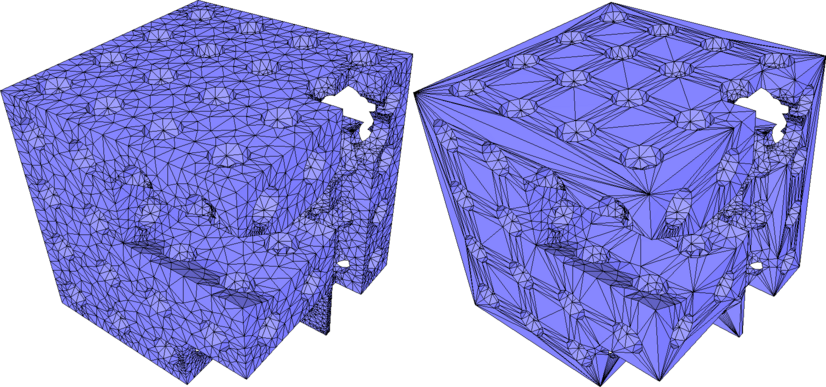
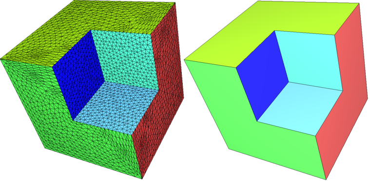
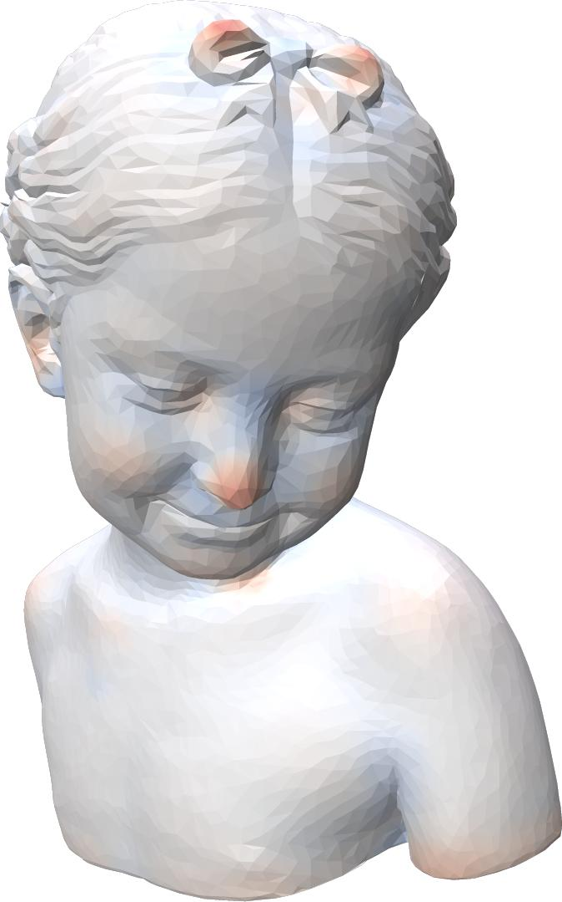
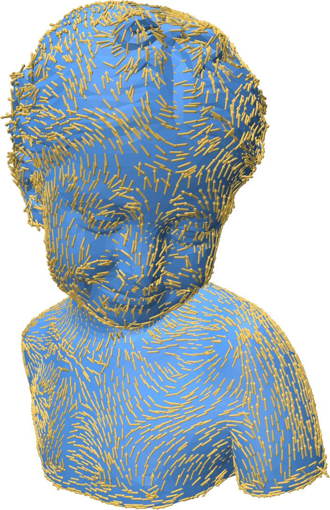
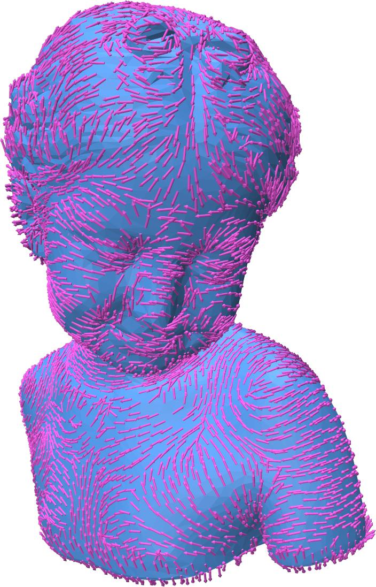
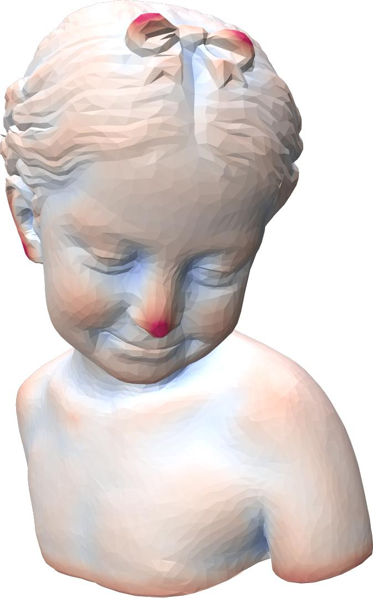
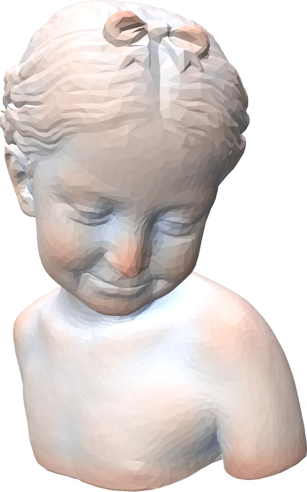
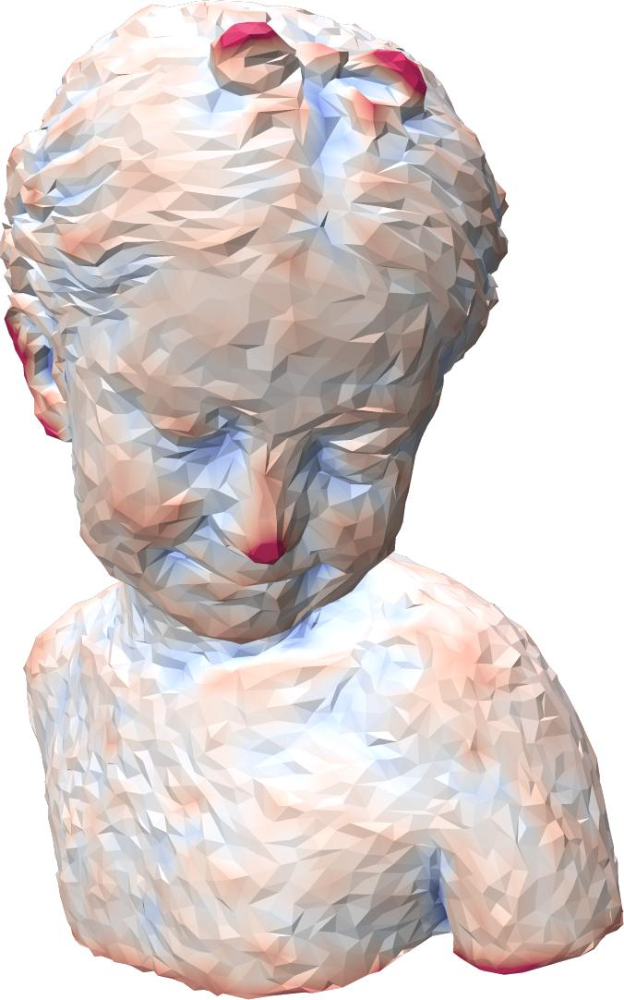
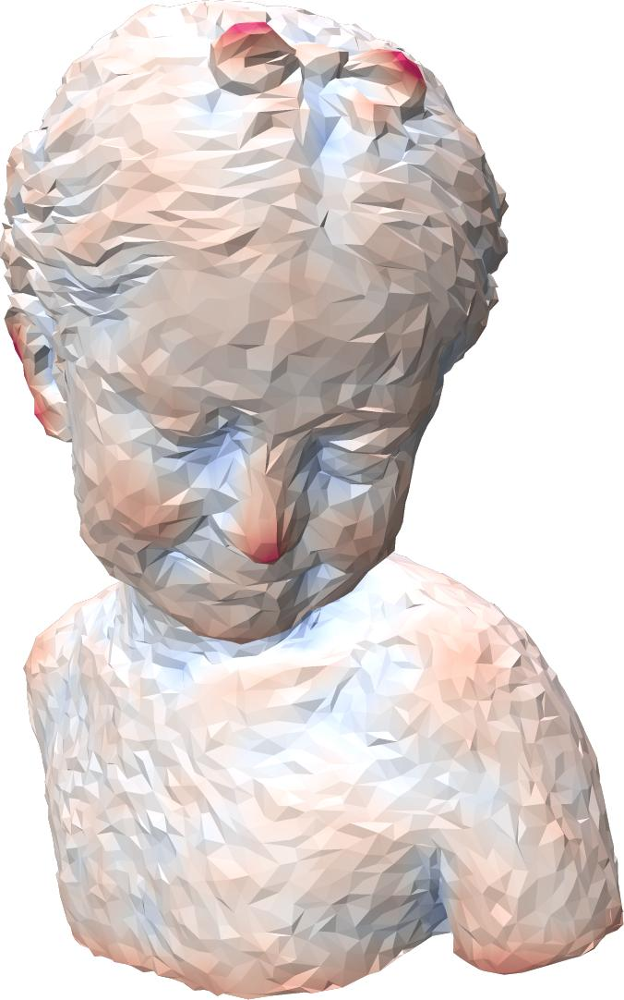
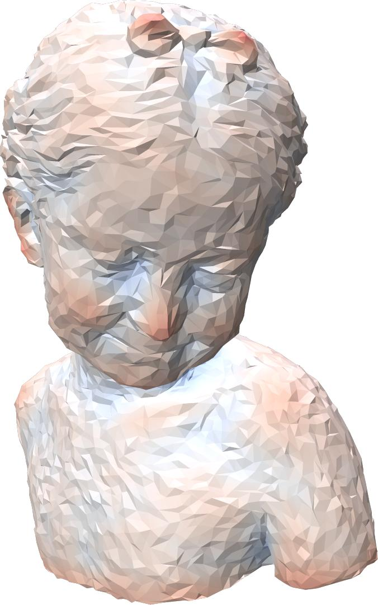

|
CGAL 6.1 - Polygon Mesh Processing
|
Loading...
Searching...
No Matches
|
CGAL 6.1 - Polygon Mesh Processing
|
This package implements a collection of methods and classes for polygon mesh processing, ranging from basic operations on simplices, to complex geometry processing algorithms. The implementation of this package mainly follows algorithms and references given in Botsch et al.'s book on polygon mesh processing [5].
A polygon mesh is a consistent and orientable surface mesh, that can have one or more boundaries. The faces are simple polygons. The edges are segments. Each edge connects two vertices, and is shared by two faces (including the null face for boundary edges). A polygon mesh can have any number of connected components, and also some self-intersections. In this package, a polygon mesh is considered to have the topology of a 2-manifold.
This package follows the BGL API described in CGAL and the Boost Graph Library. It can thus be used either with Polyhedron_3, Surface_mesh, or any class model of the concept FaceGraph. Each function or class of this package details the requirements on the input polygon mesh.
Named Parameters are used to deal with optional parameters. The page Named Parameters describes their usage.
The algorithms described in this manual are organized in sections:
In all functions of this package, the polygon meshes are required to be models of the graph concepts defined in the package CGAL and the Boost Graph Library Reference. Using common graph concepts enables having common input/output functions for all the models of these concepts. The page I/O Functions provides an exhaustive description of the available I/O functions. In addition, this package offers the function CGAL::Polygon_mesh_processing::IO::read_polygon_mesh(), which can perform some repairing if the input data do not represent a manifold surface.
A surface patch can be refined by inserting new vertices and flipping edges to get a triangulation. Using a criterion presented in [12], the density of triangles near the boundary of the patch is approximated by the refinement function. The validity of the mesh is enforced by flipping edges. An edge is flipped only if the opposite edge does not exist in the original mesh and if no degenerate triangles are generated.
A region of the surface mesh (e.g. the refined region), can be faired to obtain a tangentially continuous and smooth surface patch. The region to be faired is defined as a range of vertices that are relocated. The fairing step minimizes a linear bi-Laplacian system with boundary constraints, described in [4]. The visual results of aforementioned steps are depicted by Figure 71.13 (c and d).
Refinement and fairing functions can be applied to an arbitrary region on a triangle mesh, using :
CGAL::Polygon_mesh_processing::refine() : given a set of facets on a mesh, refines the region.CGAL::Polygon_mesh_processing::fair() : given a set of vertices on a mesh, fairs the region.Fairing needs a sparse linear solver and we recommend the use of Eigen 3.2 or later. Note that fairing might fail if fixed vertices, which are used as boundary conditions, do not suffice to solve the constructed linear system.
Many algorithms require as input meshes in which all the faces have the same degree, or even are triangles. Hence, one may want to triangulate all polygon faces of a mesh.
This package provides the function CGAL::Polygon_mesh_processing::triangulate_faces() that triangulates all faces of the input polygon mesh. An approximated support plane is chosen for each face, orthogonal to the normal vector computed by CGAL::Polygon_mesh_processing::compute_face_normal(). Then, the triangulation of each face is the one obtained by building a CGAL::Constrained_Delaunay_triangulation_2 in this plane. This choice is made because the constrained Delaunay triangulation is the triangulation that, given the edges of the face to be triangulated, maximizes the minimum angle of all the angles of the triangles in the triangulation.
The incremental triangle-based isotropic remeshing algorithm introduced by Botsch et al [3], [5] is implemented in this package. This algorithm incrementally performs simple operations such as edge splits, edge collapses, edge flips, and Laplacian smoothing. All the vertices of the remeshed patch are reprojected to the original surface to keep a good approximation of the input.
A triangulated region of a polygon mesh can be remeshed using the function CGAL::Polygon_mesh_processing::isotropic_remeshing(), as illustrated by Figure 71.1. The algorithm has two parameters: the sizing field object for the remeshed surface patch, and the number of iterations of the abovementioned sequence of operations.
The sizing field establishes the local target edge length for the remeshed surface. Two sizing fields are provided: a uniform and a curvature-adaptive sizing field. With CGAL::Polygon_mesh_processing::Uniform_sizing_field, all triangle edges are targeted to have equal lengths. With CGAL::Polygon_mesh_processing::Adaptive_sizing_field, triangle edge lengths depend on the local curvature – shorter edges appear in regions with a higher curvature and vice versa. The outline of the adaptive sizing field algorithm is available in [8]. The distinction between uniform and adaptive sizing fields is depicted in figure Figure 71.2.
As the number of iterations increases, the mesh tends to be smoother and closer to the target edge length.
An additional option has been added to protect (i.e. not modify) some given polylines. In some cases, those polylines are too long, and reaching the desired target edge length while protecting them is not possible and leads to an infinite loop of edge splits in the incident faces. To avoid that pitfall, the function CGAL::Polygon_mesh_processing::split_long_edges() should be called on the list of constrained edges before remeshing.
Figure 71.1 Isotropic remeshing. (a) Triangulated input surface mesh. (b) Surface uniformly and entirely remeshed. (c) Selection of a range of faces to be remeshed. (d) Surface mesh with the selection uniformly remeshed.
Figure 71.2 Sizing fields in isotropic remeshing. (a) Uniform sizing field. (b) Curvature-based adaptive sizing field.
The mesh generation algorithm implemented in the 3D Mesh Generation package can be used to remesh a given triangulated surface mesh. The algorithm, based on Delaunay refinement of a restricted Delaunay triangulation, generates a triangle surface mesh that provably has the required properties on simplices size, surface approximation, shape of facets, and topology of the surface. A set of edges from the input mesh can be given as constraints to build and protect a set of polylines features, that are resampled while preserving the topology of the input feature graph.
This solution for triangle surface remeshing is available in this package with the function CGAL::Polygon_mesh_processing::surface_Delaunay_remeshing(). All the meshing criteria defined for CGAL::make_mesh_3() can be used directly for size of simplices, shape of facets, surface approximation, topology, and one-dimensional features sampling.
An example of how to remesh a given triangulated surface mesh with the Delaunay refinement algorithm while preserving the detected sharp edges is given in Polygon_mesh_processing/delaunay_remeshing_example.cpp
When many triangles are used to describe a planar region of a model, one might wish to simplify the mesh in this region to use few elements, or even a single large polygonal face when the region makes up a simply connected patch. This can be achieved using the function CGAL::Polygon_mesh_processing::remesh_planar_patches(). This function performs the detection of the planar regions, using geometric predicates for coplanarity and collinearity checks. If these tests are performed exactly, the planar regions can be unexpectedly small due to the input in fact not being perfectly planar. To palliate this, it is possible to specify a threshold on the angle between adjacent faces (resp. segments) such that they are considered coplanar (resp. collinear). However, this tolerance threshold is only local and there is no global control, which can have undesired effects, such as in the classic example of a densely sampled circle arc where all points are eventually found to be almost collinear). To circumvent this situation, we provide the function CGAL::Polygon_mesh_processing::remesh_almost_planar_patches() , which expects the segmentation into planar patches and corners to be provided by the user. Such segmentation can be obtained using the function CGAL::Polygon_mesh_processing::region_growing_of_planes_on_faces(), which uses the region growing algorithm to detect planar regions in a mesh with global and local criteria. Similarly, the function CGAL::Polygon_mesh_processing::detect_corners_of_regions() can be used to detect corner vertices on the border of the planar regions detected by running the region growing algorithm on border segments of the patch.
|  |  |
| (a) | (b) |
Figure 71.3 Remeshing of planar patches in two models: (a) planar patches in the cheese model are retriangulated (b) the remeshed version of this model contains 14 vertices and has not been retriangulated, the patch ids have been assigned to the input and the output meshes, allowing an identical color scheme.
 |
Figure 71.4 Remeshing of planar patches using region growing for the detection of planar patches. From left to right: input mesh, remeshed version, remeshed version using the same angle threshold but larger approximation error.
Smoothing of a triangulated mesh region can be achieved with algorithms that aim at either mesh smoothing or shape smoothing. While mesh smoothing is achieved by improving the quality of triangles based on criteria such as angle and area, shape smoothing is designed to be intrinsic, depending as little as possible on the discretization and smoothing the shape alone without optimizing the shape of the triangles.
CGAL::Polygon_mesh_processing::angle_and_area_smoothing() moves vertices to optimize geometry around each vertex: it can try to equalize the angles between incident edges, or (and) move vertices so that areas of adjacent triangles tend to equalize. Border vertices are considered constrained and do not move at any step of the procedure. No vertices are inserted at any time. Angle and area smoothing algorithms are based on Surazhsky and Gotsman [13]. Since area smoothing considers only areas as a smoothing criterion, it may result in long and skinny triangles. To palliate this phenomenon, area smoothing is followed by an (optional) step of Delaunay-based edge flips. In any case, area smoothing is guaranteed to improve the spatial distribution of the vertices over the area that is being smoothed. A simple example can be found in Polygon_mesh_processing/mesh_smoothing_example.cpp.Figure 71.5 Mesh smoothing of the closed surface blobby, containing self-intersections (circled in red). For each smoothing combination, 10 iterations were applied. From left to right: (a) Input mesh; (b) Smoothing based on areas without using Delaunay flips; (c) Smoothing based on areas with Delaunay flips; (d) Smoothing based on angles; (e) Smoothing based on angles and areas, with Delaunay flips.
Figure 71.6 Statistics for the various combinations of mesh smoothing.
CGAL::Polygon_mesh_processing::tangential_relaxation() moves vertices following an area-based Laplacian smoothing scheme, performed at each vertex in an estimated tangent plane to the surface. The full algorithm is described in [5]. The example Polygon_mesh_processing/tangential_relaxation_example.cpp shows how this mesh relaxation function can be used.CGAL::Polygon_mesh_processing::smooth_shape() moves vertices towards a weighted barycenter of their neighbors along the mean curvature flow. The curvature flow algorithm for shape smoothing is based on Desbrun et al. [7] and on Kazhdan et al. [9]. The algorithm uses the mean curvature flow to compute the translation of vertices along the surface normal with a speed equal to the mean curvature of the area that is being smoothed. This means that vertices on sharp corners slide faster. If the region around a vertex is flat, this vertex does not move (zero curvature). To avoid the formation of undesirable neck pinches (cylindrical surface areas that form singularities) the algorithm slows down the evolution in cylindrical regions. The smoothed shape converges to a sphere while staying conformally equivalent to its original shape. A simple example can be found in Polygon_mesh_processing/shape_smoothing_example.cpp.Figure 71.7 Shape smoothing of the devil model, using the mean curvature flow with a time step equal to 0.05 and constraining border vertices (located at the neck, where the mesh is open).
This package provides two functions to extrude a triangle mesh with boundaries. A first one extrudes by offsetting each vertex by a user provided vector. A second one is more general: It takes two users provided functors which extrude "up" and "down". In both cases the boundaries are connected by a triangle strip. Note that the extrusion may generate self intersecting surfaces.
The following example calls the functions CGAL::Polygon_mesh_processing::refine() and CGAL::Polygon_mesh_processing::fair() for some selected regions on the input triangle mesh.
File Polygon_mesh_processing/refine_fair_example.cpp
Triangulating a polygon mesh can be achieved through the function CGAL::Polygon_mesh_processing::triangulate_faces() as shown in the following example.
File Polygon_mesh_processing/triangulate_faces_example.cpp
An additional parameter, named visitor can be used to track the how faces are triangulated into subfaces. The following examples shows how to use it.
File Polygon_mesh_processing/triangulate_faces_split_visitor_example.cpp
The following example shows a complete example of how the isotropic remeshing function can be used. First, the border of the polygon mesh is collected. Since the boundary edges will be considered as constrained and protected in this example, the function split_long_edges() is called first on these edges.
Once this is done, remeshing is run on all the surface, with protection of constraints activated, for 3 iterations.
File Polygon_mesh_processing/isotropic_remeshing_example.cpp
The following example extrudes in both directions by projecting points along the vertex normal. In case the function Bottom was the identity this would have been a one-sided extrusion.
File Polygon_mesh_processing/extrude.cpp
Corefinement Given two triangulated surface meshes, the corefinement operation consists in refining both meshes so that their intersection polylines are a subset of edges in both refined meshes.

Figure 71.8 Corefinement of two triangulated surface meshes. (Left) Input meshes; (Right) The two input meshes corefined. The common edges of the two meshes are drawn in green.
Volume bounded by a triangulated surface mesh Given a closed triangulated surface mesh, each connected component splits the 3D space into two subspaces. The vertex sequence of each face of a component is seen either clockwise or counterclockwise from these two subspaces. The subspace that sees the sequence clockwise (resp. counterclockwise) is on the negative (resp. positive) side of the component. Given a closed triangulated surface mesh tm with no self-intersections, the connected components of tm divide the 3D space into subspaces. We say that tm bounds a volume if each subspace lies exclusively on the positive (or negative) side of all the incident connected components of tm. The volume bounded by tm is the union of all subspaces that are on negative sides of their incident connected components of tm.

Figure 71.9 Volumes bounded by a triangulated surface mesh: The figure shows meshes representing three nested spheres (three connected components). The left side of the picture shows a clipped triangulated surface mesh, with the two possible orientations of the faces for which a volume is bounded by the mesh. The positive and negative sides of each connected component is displayed in light and dark blue, respectively. The right part of the picture shows clipped tetrahedral meshes of the corresponding bounded volumes.
The corefinement of two triangulated surface meshes can be done using the function CGAL::Polygon_mesh_processing::corefine(). It takes as input the two triangulated surface meshes to corefine. If constrained edge maps are provided, edges belonging to the intersection of the input meshes will be marked as constrained. In addition, if an edge that was marked as constrained is split during the corefinement, sub-edges will be marked as constrained as well.
Figure 71.10 Let C and S be the volumes bounded by the triangulated surface meshes of a cube and a sphere, respectively. From left to right, the picture shows the triangulated surface meshes bounding the union of C and S, C minus S, the intersection of C and S and S minus C.
The corefinement of two triangulated surface meshes can naturally be used for computing Boolean operations on volumes. Considering two triangulated surface meshes, each bounding a volume, the functions CGAL::Polygon_mesh_processing::corefine_and_compute_union(), CGAL::Polygon_mesh_processing::corefine_and_compute_intersection() and CGAL::Polygon_mesh_processing::corefine_and_compute_difference() respectively compute the union, the intersection and the difference of the two volumes. If several Boolean operations must be computed at the same time, the function corefine_and_compute_boolean_operations() should be used.
There is no restriction on the topology of the input volumes. However, there are some requirements on the input to guarantee that the operation is possible. First, the input meshes must not self-intersect. Second, the operation is possible only if the output can be bounded by a manifold triangulated surface mesh. In particular this means that the output volume has no part with zero thickness. Mathematically speaking, the intersection with an infinitesimally small ball centered in the output volume is a topological ball. At the surface level this means that no non-manifold vertex or edge is allowed in the output. For example, it is not possible to compute the union of two cubes that are disjoint but sharing an edge. In case you have to deal with such scenarios, you should consider using the package 3D Boolean Operations on Nef Polyhedra.
It is possible to update the input so that it contains the result (in-place operation). In that case the whole mesh will not be copied and only the region around the intersection polyline will be modified. In case the Boolean operation is not possible, the input mesh will nevertheless be corefined.
The corefinement operation (which is also internally used in the three Boolean operations) will correctly change the topology of the input surface mesh if the point type used in the point property maps of the input meshes is from a CGAL Kernel with exact predicates. If that kernel does not have exact constructions, the embedding of the output surface mesh might have self-intersections. In case of consecutive operations, it is thus recommended to use a point property map with points from a kernel with exact predicates and exact constructions (such as CGAL::Exact_predicates_exact_constructions_kernel).
In practice, this means that with exact predicates and inexact constructions, edges will be split at each intersection with a triangle but the position of the intersection point might create self-intersections due to the limited precision of floating point numbers.
As a natural extension, some clipping functionalities with a volume bounded by a closed mesh and a halfspace (defined by the negative side of a plane to be consistent with the outward normal convention) are offered. The functions CGAL::Polygon_mesh_processing::clip() and CGAL::Polygon_mesh_processing::split() have some options to select whether the clipping should be done at the volume or surface level, and also if the clipper should be considered as compact or not. This is illustrated on Figure 71.11 and Figure 71.12.
Figure 71.11 Clipping a cube with a halfspace. From left to right: (i) initial cube and the plane defining the clipping halfspace; (ii) clip_volume=false: clipping of the surface mesh (boundary edges depicted in red); (iii) clip_volume=true: clipping of the volume bounded by the surface mesh.
Figure 71.12 Clipping a cube with a halfspace: compactivity of the clipper (clip_volume=false in both cases). From left to right: (i) initial cube and the plane defining the clipping halfspace, note that a whole face of the cube (2 triangles) is exactly contained in the plane; (ii) use_compact_clipper=true: clipping of the surface mesh with a compact halfspace: coplanar faces are part of the output; (iii) use_compact_clipper=false: clipping of the surface mesh with a non-compact halfspace: coplanar faces are not part of the output.
File Polygon_mesh_processing/corefinement_mesh_union.cpp
This example is similar to the previous one, but here we subtract a volume and update the first input triangulated surface mesh (in-place operation). The edges that are on the intersection of the input meshes are marked and the region around them is remeshed isotropically while preserving the intersection polyline.
File Polygon_mesh_processing/corefinement_difference_remeshed.cpp
This example computes the intersection of two volumes and then does the union of the result with one of the input volumes. This operation is in general not possible when using inexact constructions. Instead of using a mesh with a point from a kernel with exact constructions, the exact points are a property of the mesh vertices that we can reuse in a later operations. With that property, we can manipulate a mesh with points having floating point coordinates but benefit from the robustness provided by the exact constructions.
File Polygon_mesh_processing/corefinement_consecutive_bool_op.cpp
This package provides an algorithm for filling one closed hole that is either in a triangulated surface mesh or defined by a sequence of points that describe a polyline. The main steps of the algorithm are described in [12] and can be summarized as follows.
First, the largest patch triangulating the boundary of the hole is generated without introducing any new vertex. The patch is selected so as to minimize a quality function evaluated for all possible triangular patches. The quality function first minimizes the worst dihedral angle between patch triangles, then the total surface area of the patch as a tiebreaker. Following the suggestions in [16], the performance of the algorithm is significantly improved by narrowing the search space to faces of a 3D Delaunay triangulation of the hole boundary vertices, from all possible patches, while searching for the best patch with respect to the aforementioned quality criteria.
For some complicated input hole boundary, the generated patch may have self-intersections. After hole filling, the generated patch can be refined and faired using the meshing functions CGAL::Polygon_mesh_processing::refine() and CGAL::Polygon_mesh_processing::fair() described in Section Meshing.

Figure 71.13 Results of the main steps of the algorithm. From left to right: (a) the hole, (b) the hole after its triangulation, (c) after triangulation and refinement, (d) after triangulation, refinement and fairing.
This package provides four functions for hole filling:
triangulate_hole_polyline() : given a sequence of points defining the hole, triangulates the hole.triangulate_hole() : given a border halfedge on the boundary of the hole on a mesh, triangulates the hole.triangulate_and_refine_hole() : in addition to triangulate_hole() the generated patch is refined.triangulate_refine_and_fair_hole() : in addition to triangulate_and_refine_hole() the generated patch is also faired.The following example triangulates a hole described by an input polyline.
File Polygon_mesh_processing/triangulate_polyline_example.cpp
If the input polygon mesh has a hole or more than one hole, it is possible to iteratively fill them by detecting border edges (i.e. with only one incident non-null face) after each hole filling step.
Holes are filled one after the other, and the process stops when there is no border edge left.
This process is illustrated by the example below, where holes are iteratively filled, refined and faired. Optionally, only holes not exceeding a certain diameter or number of edges can be filled. This example assumes that the mesh is stored in a Surface_mesh datastructure. Analogous examples when using the Polyhedron_3 class and a few others are part of the code base.
File Polygon_mesh_processing/hole_filling_example_SM.cpp
Figure 71.14 Holes in the fork model are filled with triangle patches.
An additional parameter, named visitor can be used to track which phase of the algorithm is being run. This can allow a user to stop the algorithm if a timeout needs to be implemented. For an example, see Polygon_mesh_processing/hole_filling_visitor_example.cpp .
The hole filling algorithm has a complexity which depends on the number of vertices. While [12] has a running time of \(O(n^3)\) , [16] in most cases has running time of \(O(n \log n)\). We benchmarked the function triangulate_refine_and_fair_hole() for the two meshes below (as well as two more meshes with smaller holes). The machine used was a PC running Windows 10 with an Intel Core i7 CPU clocked at 2.70 GHz. The program was compiled with the Visual C++ 2013 compiler with the O2 option, which maximizes speed.

Figure 71.15 The elephant on the left/right has a hole with 963/7657 vertices.
The following running times were observed:
| # vertices | without Delaunay (sec.) | with Delaunay (sec.) |
|---|---|---|
| 565 | 8.5 | 0.03 |
| 774 | 21 | 0.035 |
| 967 | 43 | 0.06 |
| 7657 | na | 0.4 |
This package provides several predicates to be evaluated with respect to a triangle mesh.
Intersection tests between triangle meshes and/or polylines can be done using CGAL::Polygon_mesh_processing::do_intersect() . Additionally, the function CGAL::Polygon_mesh_processing::intersecting_meshes() records all pairs of intersecting meshes in a range.
Self intersections within a triangle mesh can be detected by calling the function CGAL::Polygon_mesh_processing::does_self_intersect(). Additionally, the function CGAL::Polygon_mesh_processing::self_intersections() reports all pairs of intersecting triangles.
The following example illustrates the detection of self intersection in the pig.off mesh. The detected self-intersection is illustrated on Figure Figure 71.16.
File Polygon_mesh_processing/self_intersections_example.cpp

Figure 71.16 Detecting self-intersections on a triangle mesh. The intersecting triangles are displayed in dark grey and red on the right image.
The class CGAL::Side_of_triangle_mesh provides a functor that tests whether a query point is inside, outside, or on the boundary of the domain bounded by a given closed triangle mesh.
A point is said to be on the bounded side of the domain bounded by the input triangle mesh if an odd number of surfaces is crossed when walking from the point to infinity. The input triangle mesh is expected to contain no self-intersections and to be free from self-inclusions.
The algorithm can handle the case of a triangle mesh with several connected components, and returns correct results. In case of self-inclusions, the ray intersections parity test is performed, and the execution will not fail. However, the user should be aware that the predicate alternately considers sub-volumes to be on the bounded and unbounded sides of the input triangle mesh.
File Polygon_mesh_processing/point_inside_example.cpp
The class CGAL::Polyhedral_envelope provides functors to check if a query point, segment, or triangle is fully contained in a polyhedral envelope of a triangle mesh or of a triangle soup. In the following, input triangles will refer either to the triangles of a mesh or of a soup.
The polyhedral envelope is a conservative approximation of the Minkowski sum envelope of a set of triangles with a sphere of radius \( \epsilon \). The latter has cylindrical and spherical patches at convex edges and vertices of the input triangles.
Given a distance \( \delta = \epsilon / \sqrt(3)\) we can associate a prism to each triangle by intersecting two halfspaces parallel to the triangle, three halfspaces orthogonal to the triangle and parallel to the edges, and additionally halfspaces for clipping obtuse angles, with the face normal corresponding to the bisector of the angle. These halfspaces are at distance \( \delta \) and such that they contain the triangle.
The polyhedral envelope of a set of triangles with a tolerance \( \epsilon \) then is the union of the prisms of all faces with \( \delta = \epsilon / \sqrt(3) \).
Figure 71.17 The prism for a single triangle, the polyhedral envelope as well as the Minkowski sum envelope for a triangle mesh.
The polyhedral envelope is guaranteed to be inside the Minkowski sum envelope. This containment test is exact for the polyhedral envelope, and conservative for the Minkowswi sum envelope: If a query is inside the polyhedral envelope, we can be sure that it is also in the Minkowski sum envelope, but if it is outside the polyhedral envelope we do not know where it is with respect to the Minkowski sum envelope.
The algorithm of Wang et al. [15] for the polyhedral envelope containment check can be summarized as follows. The prisms of the faces of the input triangles are stored in an AABB tree, which is used to quickly identify the prisms whose bounding box overlaps with the query.
For a query point the algorithm checks if it is inside one of these prisms. For a query segment or triangle the algorithms checks if the query is completely covered. The details of how to check this covering can be found in the paper.
The polyhedral envelope containment check is used by the class Surface_mesh_simplification::Polyhedral_envelope_filter of the package Triangulated Surface Mesh Simplification, in order to simplify a triangle mesh within a given tolerance.
The following example shows how to construct the polyhedral envelope for a Surface_mesh and perform queries.
File Polygon_mesh_processing/polyhedral_envelope.cpp
As the polyhedral envelope does not need any connectivity information, the same check can be performed just with a triangle soup.
File Polygon_mesh_processing/polyhedral_envelope_of_triangle_soup.cpp
A triangle mesh can also be used as query, to check if a remeshed version is within the polyhedral envelope of an input mesh.
File Polygon_mesh_processing/polyhedral_envelope_mesh_containment.cpp
Badly shaped or, even worse, completely degenerate elements of a polygon mesh are problematic in many algorithms which one might want to use on the mesh. This package offers a toolkit of functions to detect such undesirable elements.
CGAL::Polygon_mesh_processing::is_degenerate_edge(), to detect if an edge is degenerate (that is, if its two vertices share the same geometric location).CGAL::Polygon_mesh_processing::is_degenerate_triangle_face(), to detect if a face is degenerate (that is, if its three vertices are collinear).CGAL::Polygon_mesh_processing::degenerate_edges(), to collect degenerate edges within a range of edges.CGAL::Polygon_mesh_processing::degenerate_faces(), to collect degenerate faces within a range of faces.CGAL::Polygon_mesh_processing::is_cap_triangle_face()CGAL::Polygon_mesh_processing::is_needle_triangle_face()To ease the manipulation of points on a surface, CGAL offers a multitude of functions based upon a different representation of a point on a polygon mesh: the point is represented as a pair of a face of the polygon mesh and a triplet of barycentric coordinates. This definition enables a robust handling of polylines between points living in the same face: for example, two 3D segments created by four points within the same face that should intersect might not actually intersect due to inexact computations. However, manipulating these same points through their barycentric coordinates can instead be done, and intersections computed in the barycentric space will not suffer from the same issues. Furthermore, this definition is only dependent on the intrinsic dimension of the surface (i.e. 2) and not on the ambient dimension within which the surface is embedded.
The functions of the group Location Functions offer the following functionalities: location computations (CGAL::Polygon_mesh_processing::locate(), and similar) given a point, finding the nearest point on a mesh given a point or a ray (CGAL::Polygon_mesh_processing::locate_with_AABB_tree(), and similar), and location-based predicates (for example, CGAL::Polygon_mesh_processing::is_on_face_border()).
The example Polygon_mesh_processing/locate_example.cpp presents a few of these functions.
This package offers multiple functions to compute consistent face orientations for set of faces (Section Polygon Soups) and polygon meshes (Section Polygon Meshes). Section Orientation Examples offers an example of combination of these functions.
When the faces of a polygon mesh are given but the connectivity is unknown, this set of faces is called a polygon soup.
Before running any of the algorithms on a polygon soup, one should ensure that the polygons are consistently oriented. To do so, this package provides the function CGAL::Polygon_mesh_processing::orient_polygon_soup(), described in [1].
To deal with polygon soups that cannot be converted to a combinatorially manifold surface, some points must be duplicated. Because a polygon soup does not have any connectivity (each point has as many occurrences as the number of polygons it belongs to), duplicating one point (or a pair of points) amounts to duplicating the polygon to which it belongs. The duplicated points are either an endpoint of an edge incident to more than two polygons, an endpoint of an edge between two polygons with incompatible orientations (during the re-orientation process), or more generally a point p at which the intersection of an infinitesimally small ball centered at p with the polygons incident to it is not a topological disk.
Once the polygon soup is consistently oriented, with possibly duplicated (or more) points, the connectivity can be recovered and made consistent to build a valid polygon mesh. The function CGAL::Polygon_mesh_processing::polygon_soup_to_polygon_mesh() performs this mesh construction step.
Inversely, a polygon soup can be constructed from a polygon mesh, using the function CGAL::Polygon_mesh_processing::polygon_mesh_to_polygon_soup().
This package provides functions dealing with the orientation of faces in a closed polygon mesh.
CGAL::Polygon_mesh_processing::orient() makes each connected component of a closed polygon mesh outward- or inward-oriented.CGAL::Polygon_mesh_processing::orient_to_bound_a_volume() orients the connected components of a closed polygon mesh so that it bounds a volume (see Definitions for the precise definition).CGAL::Polygon_mesh_processing::is_outward_oriented() checks whether an oriented polygon mesh is oriented such that the normals to all faces are oriented towards the outside of the domain bounded by the input polygon mesh.CGAL::Polygon_mesh_processing::reverse_face_orientations() reverses the orientation of halfedges around faces. As a consequence, the normal computed for each face (see Section Computing Normals) is also reversed.CGAL::Polygon_mesh_processing::volume_connected_components() provides information about the 3D arrangement of the surface connected components in a given triangle mesh. It comes with many named parameter options making it also a more general version of is_outward_oriented().CGAL::Polygon_mesh_processing::duplicate_non_manifold_edges_in_polygon_soup() duplicates points and edges to make a soup orientable, without changing the orientation of the faces.CGAL::Polygon_mesh_processing::orient_triangle_soup_with_reference_triangle_mesh() takes an input mesh as a reference and orients the triangles of a soup according to it.CGAL::Polygon_mesh_processing::merge_reversible_connected_components() merges the connected components of a polygon mesh if possible. This example shows how to generate a mesh from a polygon soup. The first step is to get a soup of consistently oriented faces, before rebuilding the connectivity. In this example, some orientation tests are performed on the output polygon mesh to illustrate Section Orientation.
File Polygon_mesh_processing/orient_polygon_soup_example.cpp
This example shows how to correctly repair and orient a soup to get a mesh from a reference :
File Polygon_mesh_processing/orientation_pipeline_example.cpp
To ensure that a polygon soup can be oriented (see Section Polygon Soups) and transformed into a workable polygon mesh, it might be necessary to preprocess the data to remove combinatorial and geometrical errors. This package offers the following functions:
CGAL::Polygon_mesh_processing::merge_duplicate_points_in_polygon_soup(),CGAL::Polygon_mesh_processing::merge_duplicate_polygons_in_polygon_soup(),CGAL::Polygon_mesh_processing::remove_isolated_points_in_polygon_soup(),as well as the function CGAL::Polygon_mesh_processing::repair_polygon_soup(), which bundles the previous functions and an additional handful of repairing techniques to obtain an as-clean-as-possible polygon soup.
When handling polygon meshes, it might happen that a mesh has several edges and vertices that are duplicated. For those edges and vertices, the connectivity of the mesh is incomplete, if not considered incorrect.
Stitching the borders of a polygon mesh can be done to fix some of the duplication. It consists in two main steps. First, border edges that are geometrically identical but duplicated are detected and paired. Then, they are "stitched" together so that edges and vertices duplicates are removed from the mesh, and each of these remaining edges is incident to exactly two faces.
The functions CGAL::Polygon_mesh_processing::stitch_boundary_cycle(), CGAL::Polygon_mesh_processing::stitch_boundary_cycles(), and CGAL::Polygon_mesh_processing::stitch_borders() can perform such repairing operations: the first two functions can be used to stitch halfedges that are part of the same boundary(ies), whereas the third function is more generic and can also stitch halfedges that live on different borders.
The input mesh should be manifold; otherwise, stitching is not guaranteed to succeed.
The following example applies the stitching operation to a simple quad mesh with duplicated border edges.
File Polygon_mesh_processing/stitch_borders_example.cpp
Non-manifold vertices can be detected using the function CGAL::Polygon_mesh_processing::is_non_manifold_vertex(). The function CGAL::Polygon_mesh_processing::duplicate_non_manifold_vertices() can be used to attempt to create a combinatorially manifold surface mesh by splitting any non-manifold vertex into as many vertices as there are manifold sheets at this geometric position. Note however that the mesh will still not be manifold from a geometric point of view, as the positions of the new vertices introduced at a non-manifold vertex are identical to the input non-manifold vertex.
In the following example, a non-manifold configuration is artificially created and fixed with the help of the functions described above.
File Polygon_mesh_processing/manifoldness_repair_example.cpp
Similarly to the problematic configuration described in the previous section, another issue that can be present in a polygon mesh is the occurrence of a "pinched" hole, that is the configuration where, when starting from a border halfedge and walking the halfedges of this border, a geometric position appears more than once (although, with different vertices) before reaching the initial border halfedge again. The functions CGAL::Polygon_mesh_processing::merge_duplicated_vertices_in_boundary_cycle() and CGAL::Polygon_mesh_processing::merge_duplicated_vertices_in_boundary_cycle(), which merge vertices at identical positions, can be used to repair this configuration.
Given a soup of triangles, a self-intersection is defined as the intersection of two triangles from the soup such that the intersection is not defined by the convex hull of one, two or three shared vertices. In other words, it is an intersection that happens in the interior of one of the two triangles, or in the interior of one their edges, except if identical points are associated to different vertices of the triangle soup which would then also includes overlaps of duplicated points.
The function CGAL::Polygon_mesh_processing::autorefine_triangle_soup() provides a way to refine a triangle soup using the intersections of the triangles from the soup. In particular, if some points are duplicated they will be merged. Note that if a kernel with exact predicates but inexact constructions is used, some new self-intersections might be introduced due to rounding issues of points coordinates. To guarantee that the triangle soup is free from self-intersections, a kernel with exact constructions must be used.
Triangle faces of a mesh made up of almost collinear points are badly shaped elements that might not be desirable to have in a mesh. The function CGAL::Polygon_mesh_processing::remove_almost_degenerate_faces() enables removing such elements, with user-defined parameters to qualify what almost means (cap_threshold and needle_threshold). As some badly shaped elements are inevitable (the triangulation of a long cylinder with only vertices on the top and bottom circles for example), extra parameters can be passed to prevent the removal of such elements (collapse_length_threshold and flip_triangle_height_threshold).
This package provides methods to compute normals on the polygon mesh. The normal can either be computed for each single face, or estimated for each vertex, as the average of its incident face normals. These computations are performed with :
CGAL::Polygon_mesh_processing::compute_face_normal()CGAL::Polygon_mesh_processing::compute_vertex_normal()Furthermore, we provide functions to compute all the normals to faces, or to vertices, or to both :
CGAL::Polygon_mesh_processing::compute_face_normals()CGAL::Polygon_mesh_processing::compute_vertex_normals()CGAL::Polygon_mesh_processing::compute_normals().Property maps are used to record the computed normals.
Property maps are an API introduced in the boost library that allows to associate values to keys. In the following examples we associate a normal vector to each vertex and to each face.
The following example illustrates how to compute the normals to faces and vertices and store them in property maps provided by the class Surface_mesh.
File Polygon_mesh_processing/compute_normals_example.cpp
The following example illustrates how to compute the normals to faces and vertices and store them in ordered or unordered maps as the class Polyhedron_3 does not provide storage for the normals.
File Polygon_mesh_processing/compute_normals_example_Polyhedron.cpp
This package provides methods to compute curvatures on polygonal meshes based on Interpolated Corrected Curvatures on Polyhedral Surfaces [10]. This includes mean curvature, Gaussian curvature, principal curvatures and directions. These can be computed on triangle meshes, quad meshes, and meshes with n-gon faces (for n-gons, the centroid must be inside the n-gon face). The algorithms used prove to work well in general. Also, on meshes with noise on vertex positions, they give accurate results, under the condition that the correct vertex normals are provided.
It is worth noting that the Principal Curvatures and Directions can also be estimated using the Estimation of Local Differential Properties of Point-Sampled Surfaces package, which estimates the local differential quantities of a surface at a point using a local polynomial fitting (fitting a d-jet). Unlike the Interpolated Corrected Curvatures, the Jet Fitting method discards topological information and thus can be used on point clouds as well.
Surface curvatures are quantities that describe the local geometry of a surface. They are important in many geometry processing applications. As surfaces are 2-dimensional objects (embedded in 3D), they can bend in 2 independent directions. These directions are called principal directions, and the amount of bending in each direction is called the principal curvature: \( k_1 \) and \( k_2 \) (denoting max and min curvatures). Curvature is usually expressed as scalar quantities like the mean curvature \( H \) and the Gaussian curvature \( K \) which are defined in terms of the principal curvatures.
The algorithms are based on the two papers [11] and [10]. They introduce a new way to compute curvatures on polygonal meshes. The main idea in [11] is based on decoupling the normal information from the position information, which is useful for dealing with digital surfaces, or meshes with noise on vertex positions. [10] introduces some extensions to this framework, as it uses linear interpolation on the corrected normal vector field to derive new closed-form equations for the corrected curvature measures. These interpolated curvature measures are the first step for computing the curvatures. For a triangle \( \tau_{ijk} \), with vertices i, j, k:
\begin{align*} \mu^{(0)}(\tau_{ijk}) = &\frac{1}{2} \langle \bar{\mathbf{u}} \mid (\mathbf{x}_j - \mathbf{x}_i) \times (\mathbf{x}_k - \mathbf{x}_i) \rangle, \\ \mu^{(1)}(\tau_{ijk}) = &\frac{1}{2} \langle \bar{\mathbf{u}} \mid (\mathbf{u}_k - \mathbf{u}_j) \times \mathbf{x}_i + (\mathbf{u}_i - \mathbf{u}_k) \times \mathbf{x}_j + (\mathbf{u}_j - \mathbf{u}_i) \times \mathbf{x}_k \rangle, \\ \mu^{(2)}(\tau_{ijk}) = &\frac{1}{2} \langle \mathbf{u}_i \mid \mathbf{u}_j \times \mathbf{u}_k \rangle, \\ \mu^{\mathbf{X},\mathbf{Y}}(\tau_{ijk}) = & \frac{1}{2} \big\langle \bar{\mathbf{u}} \big| \langle \mathbf{Y} | \mathbf{u}_k -\mathbf{u}_i \rangle \mathbf{X} \times (\mathbf{x}_j - \mathbf{x}_i) \big\rangle -\frac{1}{2} \big\langle \bar{\mathbf{u}} \big| \langle \mathbf{Y} | \mathbf{u}_j -\mathbf{u}_i \rangle \mathbf{X} \times (\mathbf{x}_k - \mathbf{x}_i) \big\rangle, \end{align*}
where \( \langle \cdot \mid \cdot \rangle \) denotes the usual scalar product, \( \bar{\mathbf{u}}=\frac{1}{3}( \mathbf{u}_i + \mathbf{u}_j + \mathbf{u}_k )\).
The first measure \( \mu^{(0)} \) is the area measure of the triangle, and the measures \( \mu^{(1)} \) and \( \mu^{(2)} \) are the mean and Gaussian corrected curvature measures of the triangle. The last measure \( \mu^{\mathbf{X},\mathbf{Y}} \) is the anisotropic corrected curvature measure of the triangle. The anisotropic measure is later used to compute the principal curvatures and directions through an eigenvalue solver.
The interpolated curvature measures are then computed for each vertex \( v \) as the sum of the curvature measures of the faces in a ball around \( v \) weighted by the inclusion ratio of the triangle in the ball. This ball radius is an optional (named) parameter of the function. There are 3 cases for the ball radius passed value:
average_edge_length * 1e-6) is used (to account for the convergence of curvatures at infinitely small balls).To get the final curvature value for a vertex \( v \), the respective interpolated curvature measure is divided by the interpolated area measure.
\[ \mu^{(k)}( B ) = \sum_{\tau : \text{triangle} } \mu^{(k)}( \tau ) \frac{\mathrm{Area}( \tau \cap B )}{\mathrm{Area}(\tau)}. \]
The implementation is generic in terms of mesh data structure. It can be used on Surface_mesh, Polyhedron_3 and other polygonal mesh structures based on the concept FaceGraph.
These computations are performed using (on all vertices of the mesh) CGAL::Polygon_mesh_processing::interpolated_corrected_curvatures() where function named parameters are used to select the curvatures (and possibly directions) to be computed. An overload function with the same name but taking a given vertex is also available in case the computation should be done only for that vertex.
First, Figure 71.18 illustrates various curvature measures on a triangular mesh.
|  |  |  | |
| (a) | (b) |
Figure 71.18 Mean curvature, Gaussian curvature, minimal principal curvature direction and maximal principal curvature direction on a mesh (ball radius set to 0.04).
|  |  | ||
|  |  |  | |
| (a) | (b) |
Figure 71.19 When changing the integration ball radius, we obtain a scale space of curvature measure that can be used to tackle possible noise in the input as illustrated in the second row (mean curvature only with fixed colormap ranges and ball radii in {0.02,0.03,0.04,0.05}).
The implemented algorithms exhibit a linear complexity in the number of faces of the mesh. It is worth noting that we pre-computed the vertex normals and passed them as a named parameter to the function to better estimate the performance of the curvature computation. For the data reported in the following table, we used a machine with an Intel Core i7-8750H CPU @ 2.20GHz, 16GB of RAM, on Windows 11, 64 bits and compiled with Visual Studio 2019.
| Ball Radius | Computation | Spot (6k faces) | Bunny (144K faces) | Stanford Dragon (871K faces) | Old Age or Winter (6M faces) |
|---|---|---|---|---|---|
| vertex 1-ring faces (default) | Mean Curvature | < 0.001 s | 0.019 s | 0.11 s | 2.68 s |
| Gaussian Curvature | < 0.001 s | 0.017 s | 0.10 s | 2.77 s | |
| Principal Curvatures & Directions | 0.002 s | 0.044 s | 0.25 s | 3.98 s | |
| All (optimized for shared computations) | 0.003 s | 0.049 s | 0.28 s | 4.52 s | |
| r = 0.1 * avg_edge_length | Mean Curvature | 0.017 s | 0.401 s | 2.66 s | 22.29 s |
| Gaussian Curvature | 0.018 s | 0.406 s | 2.63 s | 21.61 s | |
| Principal Curvatures & Directions | 0.019 s | 0.430 s | 2.85 s | 23.55 s | |
| All (optimized for shared computations) | 0.017 s | 0.428 s | 2.89 s | 24.16 s | |
| r = 0.5 * avg_edge_length | Mean Curvature | 0.024 s | 0.388 s | 3.18 s | 22.79 s |
| Gaussian Curvature | 0.024 s | 0.392 s | 3.21 s | 23.58 s | |
| Principal Curvatures & Directions | 0.027 s | 0.428 s | 3.41 s | 24.44 s | |
| All (optimized for shared computations) | 0.025 s | 0.417 s | 3.44 s | 23.93 s |
Figure 71.20 Performance of the curvature computation on various meshes (in seconds). The first 4 rows show the performance of the default value for the ball radius, which is using the 1-ring of neighboring faces around each vertex, instead of actually approximating the inclusion ratio of the faces in a ball of certain radius. The other rows show a ball radius of 0.1 (and 0.5) scaled by the average edge length of the mesh. It is clear that using the 1-ring of faces is much faster, but it might not be as effective when used on a noisy input mesh.
Property Maps are used to record the computed curvatures as shown in examples. In the following examples, for each property map, we associate a curvature value to each vertex.
The following example illustrates how to compute the curvatures on vertices and store them in the property maps provided by the class Surface_mesh.
File Polygon_mesh_processing/interpolated_corrected_curvatures_SM.cpp
The following example illustrates how to compute the curvatures on vertices and store them in dynamic property maps as the class Polyhedron_3 does not provide storage for the curvatures.
File Polygon_mesh_processing/interpolated_corrected_curvatures_PH.cpp
The following example illustrates how to compute the curvatures on a specific vertex.
File Polygon_mesh_processing/interpolated_corrected_curvatures_vertex.cpp
The CGAL::Polygon_mesh_slicer is an operator that intersects a triangle surface mesh with a plane. It records the intersection as a set of polylines since the intersection can be made of more than one connected component. The degenerate case where the intersection is a single point is handled.
Figure 71.21 shows the polylines returned by the slicing operation for a triangle mesh and a set of parallel planes.
Figure 71.21 Slicing a mesh. A triangle mesh (left) and the polylines computed by the mesh slicer by intersecting a set of parallel planes (right).
The example below illustrates how to use the mesh slicer for a given triangle mesh and a plane. Two constructors are used in the example for pedagogical purposes.
File Polygon_mesh_processing/mesh_slicer_example.cpp
This package provides functions to enumerate and store the connected components of a polygon mesh. The connected components can be either closed and geometrically separated, or separated by border or user-specified constraint edges.
First, the function CGAL::Polygon_mesh_processing::connected_component() collects all the faces that belong to the same connected component as the face that is given as a parameter.
Then, CGAL::Polygon_mesh_processing::connected_components() collects all the connected components, and fills a property map with the indices of the different connected components.
The functions CGAL::Polygon_mesh_processing::keep_connected_components() and CGAL::Polygon_mesh_processing::remove_connected_components() enable the user to keep and remove only a selection of connected components, provided either as a range of faces that belong to the desired connected components or as a range of connected component ids (one or more per connected component).
When a triangle mesh has no boundary, it partitions the 3D space in different volumes. The function CGAL::Polygon_mesh_processing::volume_connected_components() can be used to assign to each face an id per volume defined by the surface connected components.
Finally, it can be useful to quickly remove some connected components, for example for noisy data where small connected components should be discarded in favor of major connected components. The function CGAL::Polygon_mesh_processing::keep_largest_connected_components() enables the user to keep only a given number from the largest connected components. The size of a connected component is given by the sum of the sizes of the faces it contains; by default, the size of a face is 1 and thus the size of a connected component is equal to the number of faces it contains. However, it is also possible to pass a face size map, such that the size of the face is its area, for example. Similarly to the previous function, the function CGAL::Polygon_mesh_processing::keep_large_connected_components() can be used to discard all connected components whose size is below a user-defined threshold.
Also, the function CGAL::Polygon_mesh_processing::split_connected_components() enables the user to split the connected components of a polygon mesh in as many polygon meshes.
The first example shows how to record the connected components of a polygon mesh. In particular, we provide an example for the optional parameter EdgeConstraintMap, a property map that returns information about an edge being a constraint or not. A constraint provides a mean to demarcate the border of a connected component, and prevents the propagation of a connected component index to cross it.
File Polygon_mesh_processing/connected_components_example.cpp
The second example shows how to use the class template Face_filtered_graph which enables to treat one or several connected components as a face graph.
File Polygon_mesh_processing/face_filtered_graph_example.cpp
This package provides methods to compute (approximate) distances between meshes and point sets.
The function approximate_Hausdorff_distance() computes an approximation of the Hausdorff distance from a mesh tm1 to a mesh tm2. Given a a sampling of tm1, it computes the distance to tm2 of the farthest sample point to tm2 [6]. The symmetric version (approximate_symmetric_Hausdorff_distance()) is the maximum of the two non-symmetric distances. Internally, points are sampled using sample_triangle_mesh() and the distance to each sample point is computed using max_distance_to_triangle_mesh(). The quality of the approximation depends on the quality of the sampling and the runtime depends on the number of sample points. Three sampling methods with different parameters are provided (see Figure 71.22).
Figure 71.22 Sampling of a triangle mesh using different sampling methods. From left to right: (a) Grid sampling, (b) Monte-Carlo sampling with fixed number of points per face and per edge, (c) Monte-Carlo sampling with a number of points proportional to the area/length, and (d) Uniform random sampling. The four pictures represent the sampling on the same portion of a mesh, parameters were adjusted so that the total number of points sampled in faces (blue points) and on edges (red points) are roughly the same. Note that when using the random uniform sampling some faces/edges may not contain any point, but this method is the only one that allows to exactly match a given number of points.
The function approximate_max_distance_to_point_set() computes an approximation of the Hausdorff distance from a mesh to a point set. For each triangle, a lower and upper bound of the Hausdorff distance to the point set are computed. Triangles are refined until the difference between the bounds is lower than a user-defined precision threshold.
In the following example, a mesh is isotropically remeshed and the approximate distance between the input and the output is computed.
File Polygon_mesh_processing/hausdorff_distance_remeshing_example.cpp
In Poisson_surface_reconstruction_3/poisson_reconstruction_example.cpp, a triangulated surface mesh is constructed from a point set using the Poisson reconstruction algorithm , and the distance between the point set and the reconstructed surface is computed with the following code:
The function CGAL::Polygon_mesh_processing::bounded_error_Hausdorff_distance() computes an estimate of the Hausdorff distance of two triangle meshes which is bounded by a user-given error bound. Given two meshes tm1 and tm2, it follows the procedure given by [14]. Namely, a bounded volume hierarchy (BVH) is built on tm1 and tm2 respectively. The BVH on tm1 is used to iterate over all triangles in tm1. Throughout the traversal, the procedure keeps track of a global lower and upper bound on the Hausdorff distance respectively. For each triangle t in tm1, by traversing the BVH on tm2, it is estimated via the global bounds whether t can still contribute to the actual Hausdorff distance. From this process, a set of candidate triangles is selected.
The candidate triangles are subsequently subdivided and for each smaller triangle, the BVH on tm2 is traversed again. This is repeated until the triangle is smaller than the user-given error bound, all vertices of the triangle are projected onto the same triangle in tm2, or the triangle's upper bound is lower than the global lower bound. After creation, the subdivided triangles are added to the list of candidate triangles. Thereby, all candidate triangles are processed until a triangle is found in which the Hausdorff distance is realized or in which it is guaranteed to be realized within the user-given error bound.
In the current implementation, the BVH used is an AABB-tree and not the swept sphere volumes as used in the original implementation. This should explain the runtime difference observed with the original implementation.
The function CGAL::Polygon_mesh_processing::bounded_error_Hausdorff_distance() computes the one-sided Hausdorff distance from tm1 to tm2. This component also provides the symmetric distance CGAL::Polygon_mesh_processing::bounded_error_symmetric_Hausdorff_distance() and an utility function called CGAL::Polygon_mesh_processing::is_Hausdorff_distance_larger() that returns true if the Hausdorff distance between two meshes is larger than the user-defined max distance.
In the following examples: (a) the distance of a tetrahedron to a remeshed version of itself is computed, (b) the distance of two geometries is computed which is realized strictly in the interior of a triangle of the first geometry, (c) a perturbation of a user-given mesh is compared to the original user-given mesh, (d) two user-given meshes are compared, where the second mesh is gradually moved away from the first one.
File Polygon_mesh_processing/hausdorff_bounded_error_distance_example.cpp
This package provides methods to detect some features of a polygon mesh.
The function CGAL::Polygon_mesh_processing::sharp_edges_segmentation() detects the sharp edges of a polygon mesh and deduces surface patches and vertices incidences. It can be split into three functions : CGAL::Polygon_mesh_processing::detect_sharp_edges(), CGAL::Polygon_mesh_processing::connected_components() and CGAL::Polygon_mesh_processing::detect_vertex_incident_patches(), that respectively detect the sharp edges, compute the patch indices, and give each of pmesh vertices the patch indices of its incident faces.
In the following example, we count how many edges of pmesh are incident to two faces whose normals form an angle smaller than 90 degrees, and the number of surface patches that are separated by these edges.
File Polygon_mesh_processing/detect_features_example.cpp
Registration of one mesh onto another is often required to map between multiple acquisitions of an object or between an acquisition and a CAD model, e.g., in quality assurance. A simple linear transformation is only sufficient in the case of rigid objects.
The functions CGAL::Polygon_mesh_processing::non_rigid_mesh_to_mesh_registration() and CGAL::Polygon_mesh_processing::non_rigid_mesh_to_points_registration() compute a non-rigid registration from a source mesh onto a target mesh or a target oriented point cloud. For each vertex in the source mesh a translation vector and a rotation matrix is returned. The registration is formulated as an energy to minimize the distance between source and target. The energy is iteratively minimized by solving sparse linear systems and finding closest rotation matrices. The core algorithm is ICP, iterative closest point. In each iteration, the method identifies vertex or point pairs between the intermediate, initially a copy of the source, and the target and subsequently computes the transformations which minimize the distance between them. The intermediate is updated after each iteration and converges towards the target.
\begin{equation} \mathbf{E_{reg}} = w_1\mathbf{E_{match}} + w_2\mathbf{E_{point\_to\_plane}} + w_3\mathbf{E_{arap}}, \label{eq:e_reg} \end{equation}
with the single energy terms:
\begin{equation} \mathbf{E_{match}} = \sum_{\mathbf{v}_i, \mathbf{\tilde{v}}_i \in P} \left\|\mathbf{\tilde{v}}_i - (\mathbf{R}_i\mathbf{v}_i + \mathbf{t_i})\right\|^2_2, \label{eq:e_match} \end{equation}
\begin{equation} \mathbf{E_{point\_to\_plane}} = \sum_{\mathbf{v}_i, \mathbf{\tilde{v}}_i \in P} \left\|(\mathbf{\tilde{v}}_i - (\mathbf{R}_i\mathbf{v}_i + \mathbf{t_i}))\mathbf{\tilde{n}}_i\right\|^2_2, \label{eq:e_plane} \end{equation}
\begin{equation} \mathbf{E_{arap}} = \sum_{\mathbf{v}_i \in M} \sum_{\mathbf{v}_j \in N(\mathbf{v}_i)} \left\| (\mathbf{R}_i\mathbf{v}_i + \mathbf{t}_i - \mathbf{R}_j\mathbf{v}_j + \mathbf{t}_j) - \mathbf{R}_i(\mathbf{v}_i - \mathbf{v}_j) \right\|^2_2, \label{eq:e_arap} \end{equation}
where:
The \(\mathbf{E_{match}}\) energy penalizes the distance between point pairs \(\mathbf{v}_i\) and \(\mathbf{\tilde{v}}_i\). The point pairs are restablished after each iteration. In addition, the method can take fixed point pairs of correspondences between source and target. This greatly improves the quality of the registration and is generally required when the initial alignment of the source and target is poor.
The \(\mathbf{E_{point\_to\_plane}}\) energy is similar to \(\mathbf{E_{match}}\), but instead penalizes the distance to the plane given by the target vertex and its normal. This energy compensates for different discretizations, i.e., for source and target mesh that were not created by deforming one mesh into the other.
The \(\mathbf{E_{arap}}\) energy, as-rigid-as-possible, controls the rigidity of the transformation. It measures the deformation of the edges connected to each vertex that results from applying an individual transformation to each vertex of the source mesh.
The algorithm has six parameters:
point_to_point_energy: Sets the weight w1 of the \(\mathbf{E_{match}}\). Penalizes the distance between vertices of intermediate and target. A higher value promotes a tighter fit.point_to_plane_energy: Sets the weight w2 of the \(\mathbf{E_{point\_to\_plane}}\). Also penalizes the distances between the meshes, but is more forgiving towards different discretization.as_rigid_as_possible_energy: Controls the rigidity weight w3 of the \(\mathbf{E_{arap}}\). Penalizes the deformation of the source and may thus prefer rigidity over a tight fit.maximal_matching_distance: The maximal distance for finding vertex/point pairs between the intermediate and target. A pair is ignored during an iteration if the specified distance is exceeded.number_of_iterations: The number of ICP iterations. The default value is 50.correspondences: Optional fixed vertex/point pairs can be provided to guide the registration. These are especially helpful when source and target are not roughly aligned initially.Figure 71.23 Non-rigid registration using five correspondences on top of the head and at the tips of hand and feet. A low rigidity leads to a distortion and a self-intersection of the transformed mesh. The topology of the mesh as well as the number of vertices and faces remain unchanged. The lack of correspondences also causes self-intersection and leads to a flattening of the left arm.
In the following example the bear_simple.off model is registered onto the bear_simple_bis.off model. The resulting transformed mesh is then saved as off file with a name depending on the chosen parameters.
File Polygon_mesh_processing/non_rigid_mesh_registration_example.cpp
A first version of this package was started by Ilker O. Yaz and Sébastien Loriot. Jane Tournois worked on the finalization of the API, code, and documentation.
A prototype of mesh and shape smoothing was developed during the 2017 edition of the Google Summer of Code by Konstantinos Katrioplas, under supervision of Jane Tournois. It was finalized by Mael Rouxel-Labbé and integrated in CGAL 5.0.
Functionalities related to mesh and polygon soup repair have been introduced steadily over multiple versions since CGAL 4.10, in joint work between Sébastien Loriot and Mael Rouxel-Labbé.
The polyhedral envelope containment check was integrated in CGAL 5.3. The implementation makes use of the version of https://github.com/wangbolun300/fast-envelope available on 7th of October 2020. It only uses the high level algorithm of checking that a query is covered by a set of prisms, where each prism is an offset for an input triangle. That is, the implementation in CGAL does not use indirect predicates.
The interpolated corrected curvatures were implemented during GSoC 2022. This was implemented by Hossam Saeed and under the supervision of David Coeurjolly, Jaques-Olivier Lachaud, and Sébastien Loriot. The implementation is based on [10]. DGtal's implementation was also used as a reference during the project.
The curvature-based sizing field version of isotropic remeshing was added by Ivan Pađen during GSoC 2023, under the supervision of Sébastien Loriot and Jane Tournois.
The non-rigid mesh registration was developed by Roberto M. Dyke. Sven Oesau integrated the method into CGAL.